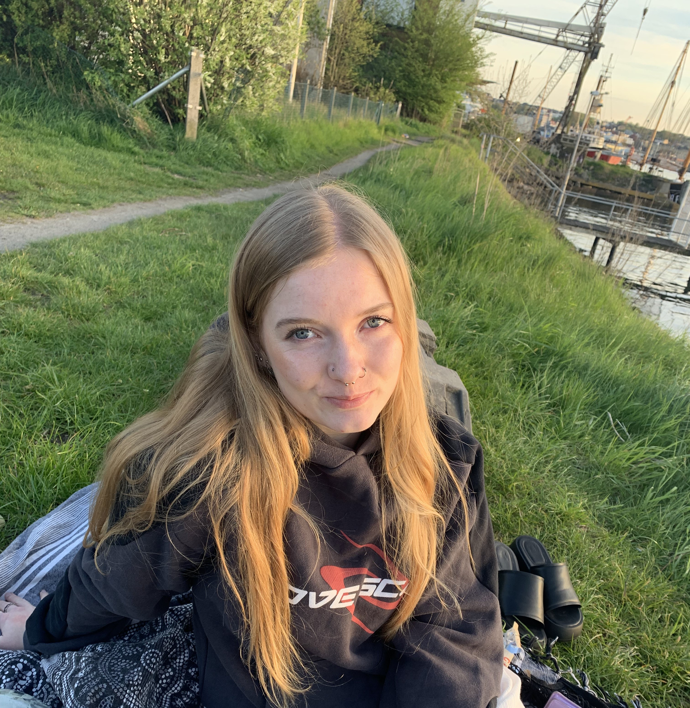
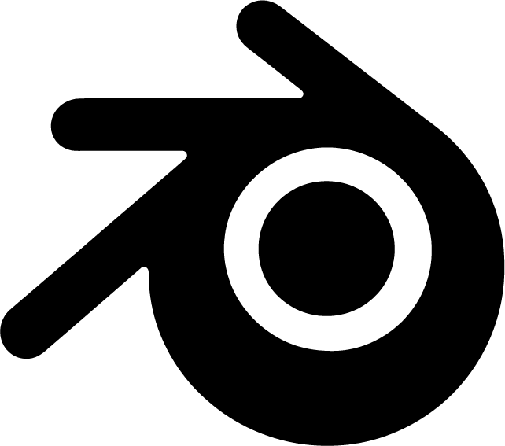
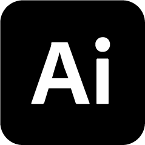
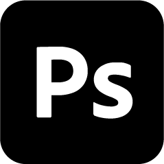
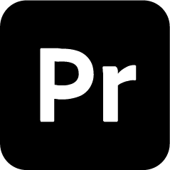
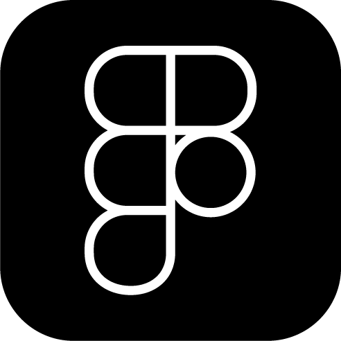

about
Hey, I’m Larissa - a designer and illustrator.
I work across graphic design, art, and digital media. My projects usually land somewhere in between, depending on what the idea needs. I like keeping things open and figuring them out along the way.
I’m interested in mood, composition, and the small details that make something feel right.
A lot of ideas come from everyday things - music, conversations, or just spending too much time online.
When I’m not working, I’m probably collecting references, making playlists, or getting sidetracked by something completely unrelated.
This site is a mix of finished work and things in progress.
Take your time.

education
Uni has been a great space to actually get hands-on - that’s where I feel most at home.
I’m currently in my sixth semester and starting to think about what’s next. Right now, I’m especially interested in getting deeper into 3D look development: working with textures, lighting, and everything that shapes a strong render.
At the same time, I’d like to explore editorial design more and keep developing my graphic design work alongside it.
The plan is to keep building on that and eventually move into a master’s programme with a focus on 3D.
Still figuring things out, but that’s part of it.







art & me
I spend most of my time at university working digitally, that’s where most projects and deadlines happen. Outside of that, I usually switch to more analog work. Quick sketches, small experiments, just drawing without overthinking it. A lot of those pieces stay offline, so they’re not really part of this portfolio.
I’m drawn to work that feels a bit raw. Not too polished, sometimes loud, sometimes slightly off. Things that create a reaction before they fully make sense. I keep coming back to surreal, abstract, and expressive work, as well as street art and more political pieces.
Inspiration shows up in a lot of places. Magazine layouts, city walls, things I come across online, and especially other artists. I often look at people like ore_ore_ore_, sevensixties, yamepi, vaprart, as well as friends whose work constantly pushes me to rethink things.
My interest in art started long before I worked digitally. Artists like Hundertwasser, Banksy, and Basquiat shaped how I see things early on, along with movements like surrealism and expressionism. They showed me that work doesn’t have to be clean or quiet to be meaningful.
Even though I work digitally most of the time, I keep coming back to mixed media. Paint, markers, pencils, paper, or whatever happens to be around. I like the unpredictability of it.
For a while, I used to overthink everything I made. I’m trying to move away from that and work more intuitively. Starting without a fixed plan and seeing where things go.
For me, art is about connection. Not just making it, but also looking at it, questioning it, and feeling something from it. Especially when it reflects something real.